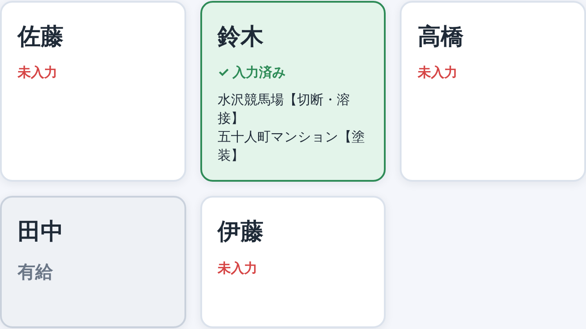
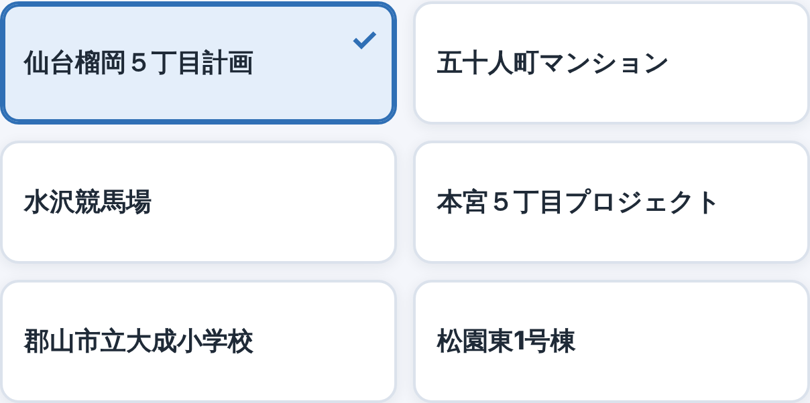
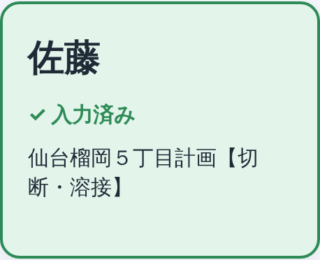
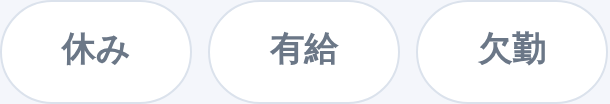
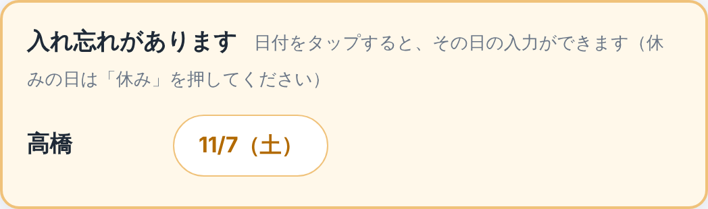

毎日、仕事が終わったら入力してください（1人1分）

まだ入れていない人は 「未入力」 と赤く出ています。

青くなって ✓ が付きます。いくつでもえらべます。もう一度押すと取り消し。
えらんだ物件ごとに、切断・溶接・塗装をえらびます（いくつでも）。工程は必ずえらんでください。時間は分かれば入れてください（なくてもOK）。

名前が 緑 になって 「✓ 入力済み」 と出たら終わりです。

名前をタップして「休み」「有給」「欠勤」を押すだけで保存されます。

黄色い枠の日付をタップすると、その日の入力ができます。
もう一度名前をタップして直し、「保存する」を押します。
ほかの日を直す時は、画面の上の 「‹」 で日付をもどしてから名前をタップ。
を押すと、前回の物件と工程がそのまま入ります。あとは「保存する」だけ。